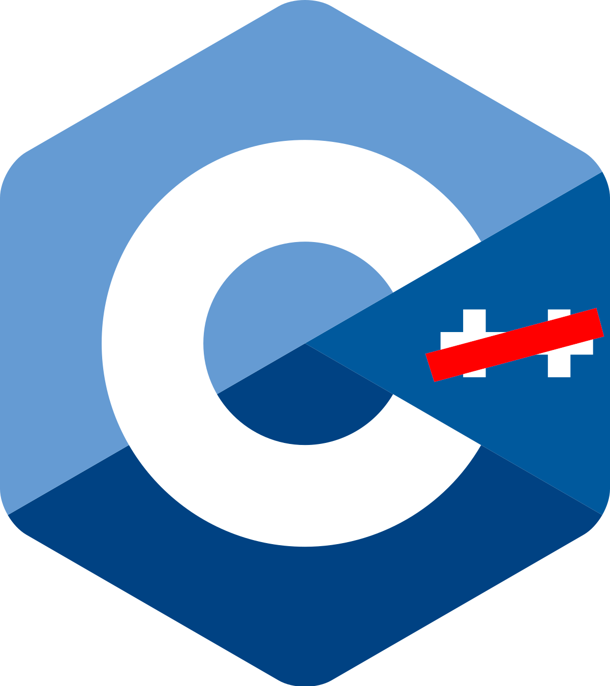

After the recent changes to the lisp side of my engine, I took some time to review the C/C++ side. You'll notice that I have written C/C++ and that's because my codebase uses both of them.
When I started my project, I initially intended for it to use just pure C, as this is the one I'm more familiar with. But over time some C++ features crept in. Features like namespacess, bools, and function overloading proved to be useful so I kept using them. Now my code uses C concepts with new nifty C++ features.
Now, I could have just continued with this approach. It works, after all. But I wondered if I should just stick to C and drop C++ altogether. My thinking is that sticking with just one language would make the code simpler as I only have to use it's subset of features. I know it's not a solid reason but I figured it's better to act now while it is still early.

For the most part, dropping C++ was easy. Most of the difficulty I encountered was making sure the changes worked on all three supported platforms. There was a situation when I thought I was done only to find it doesn't work on Mac and Windows. I had to slowly re-apply the changes just to see where exactly things went wrong.
What's funny is that I learned that I was using a lot more C++ features than I thought. Namespaces and default arguments are some that really surprised me. I always assumed they were supported on both languages. This just proves to me that I still have a lot to learn with these languages.
I also took the chance during the transition to switch from GLM, an OpenGL Mathematics lirary using C++, to CGLM a similar library that uses C. It is claimed that the latter is more optimized and, with it being in C, is easier to integrate with my codebase.
While these changes did not do much in terms of progress, I am happy that my codebase now feels tighter and more coherent. I'm hoping to work on something engine-related next.
If you are interested to check out my still-under-construction game engine, you can do so here.